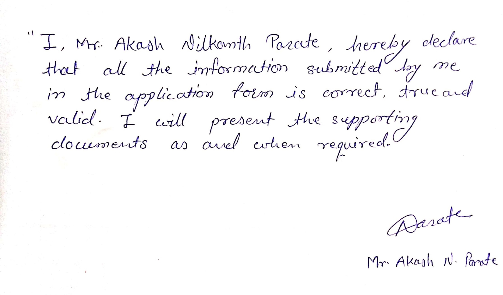

Home
Akash N. Parate
I'm
About
A dedicated computer teacher with a passion for nurturing the next generation of tech-savvy individuals. My journey in the world of education and technology has been an exciting one, and I'm thrilled to share it with you through this portfolio.
With a strong foundation in computer education and a career spanning several years, I have had the privilege of teaching a wide range of computer subjects. My teaching approach is rooted in practicality, hands-on learning, and the belief that computer skills are not only essential for academic success but also crucial for a successful career in the modern world.
My mission is to inspire and equip students with the knowledge and skills they need to excel in computer (software development). Teaching isn't just a job for me; it's a calling that allows me to make a meaningful impact on the lives of the next generation of tech enthusiasts.
In this portfolio, you'll find a showcase of my work, my qualifications, and a glimpse into my teaching philosophy. I look forward to the opportunity to connect with fellow educators, institutions, and anyone who shares my enthusiasm for computer education.
Thank you for visiting, and I hope you find this portfolio a source of inspiration and information about my journey in the world of computer education.
An opportunity to make a strong contribution to organizational goals through continuous development of professional skills and to effectively work as a team member and perform all the assigned work. To obtain a challenging and responsible position where I contribute to the successful growth of the organization using my skills and hard work.

Male
Marathi, Hindi, English
akashparate29@gmail.com
Chandrapur, Maharashtra, India
BCCA, B.Ed, M.Com
Available
Teaching philosophy
My teaching philosophy is grounded in the belief that education is a transformative journey, and as a computer teacher, I play a vital role in guiding students towards realizing their full potential in the world of technology. Through my experience and commitment, I have developed a teaching philosophy that focuses on the following key principles:
- Practical Learning: I believe that hands-on, practical experience is fundamental to understanding and mastering software and technology. I encourage active engagement with the subject matter, fostering an environment where students can experiment, create, and learn by doing.
- Individualized Learning: Recognizing that every student is unique, I tailor my teaching methods to accommodate different learning styles and paces. I aim to create a supportive and inclusive classroom that allows each student to thrive and reach their goals.
- Relevance and Real-World Application: I emphasize the real-world application of the concepts I teach. My goal is to equip students with skills and knowledge that can be immediately applied in their academic pursuits and future careers. Whether it's web development, programming, or any other aspect of software, I strive to make it relevant.
- Inspiration and Empowerment: Beyond imparting technical knowledge, I see my role as an inspirer. I aim to instill a genuine passion for technology in my students. I want them to feel confident and empowered to tackle challenges and innovate in the ever-evolving world of computer science.
- Ethical Responsibility: I emphasize the importance of ethical behavior and responsible use of technology. It is crucial for students to understand the ethical implications of their work and the impact of technology on society.
- Lifelong Learning: I believe in fostering a culture of continuous learning. Technology evolves rapidly, and I encourage my students to adopt a growth mindset and stay curious, even after they leave the classroom.
Teaching is not just a profession for me; it is a calling. I find immense joy in witnessing the growth and development of my students, both academically and personally. My teaching philosophy centers on nurturing a deep appreciation for the possibilities of technology and providing the guidance and resources needed for students to embark on their own exciting journeys in the world of software and computer education.
Passion and Interests
My journey as a computer teacher is driven by a deep-seated passion for technology and a commitment to shaping the next generation of digital innovators. This passion is fueled by several key interests and beliefs:
- Empowering Future Innovators: I am genuinely excited about the potential that technology holds to transform lives and drive innovation. By sharing my knowledge and insights, I aim to empower the next generation of technology enthusiasts and innovators.
- Lifelong Learning: The ever-evolving nature of technology keeps me on a perpetual learning journey. I am committed to staying current with the latest trends, tools, and programming languages, which allows me to provide students with the most up-to-date and relevant knowledge.
- Creativity and Problem-Solving: Technology is a canvas for creativity and a platform for solving real-world problems. I am deeply fascinated by the creative potential that coding and software development offer. It's incredibly rewarding to see students harness these tools to bring their ideas to life.
- Digital Literacy: I am passionate about promoting digital literacy. In today's interconnected world, computer skills are fundamental. I believe that everyone should have the opportunity to harness the power of technology, and I'm dedicated to making this a reality.
- Inspiring Curiosity: As an educator, I find immense satisfaction in inspiring curiosity in my students. The spark of inquisitiveness is the driving force behind learning, and I am committed to nurturing it.
- Community Building: I am enthusiastic about building a community of learners, where students support each other's growth and development. This sense of belonging fosters a love for learning and encourages collaboration.
- Technology for Social Impact: I strongly believe in the potential of technology to bring about positive social change. My interests extend to using technology for social impact projects and encouraging students to explore tech solutions for societal challenges.
My passion and interests converge in the classroom, where I have the privilege of imparting valuable knowledge and nurturing the same enthusiasm I have for technology in my students. It is my hope that this passion will continue to inspire students to explore, innovate, and create a brighter, tech-driven future.
Why I Teach
Teaching, for me, is not just a profession; it is a calling that resonates deeply within my core. My journey as a computer teacher is underpinned by a set of beliefs and motivations that drive my unwavering commitment to the profession:
- Igniting a Love for Learning: I teach because I firmly believe in the transformative power of education. Witnessing the spark of curiosity and the joy of discovery in my students' eyes is an incomparable reward. It is this love for learning that keeps me dedicated to the classroom.
- Empowering the Future: I teach to empower the next generation with the knowledge and skills they need to thrive in an increasingly digital world. Computer education is not just about coding; it's about equipping students with the tools to shape their future and contribute to technological advancements.
- Mentoring and Guiding: Teaching allows me to mentor and guide students on their educational journeys. I take pride in being a source of support and encouragement as they navigate the challenges of acquiring new skills and knowledge.
- Fostering Creativity: I am passionate about fostering creativity. In the field of computer science, I see boundless opportunities for students to express their unique ideas and create innovative solutions to real-world problems. Teaching enables me to nurture and channel this creativity.
- Impacting Lives: The ability to positively impact the lives of my students is a source of immense fulfillment. Knowing that I have played a part in their growth and development, both academically and personally, is the driving force behind my commitment to teaching.
- Laying the Foundation: My role as a teacher is about laying a strong foundation. I teach to provide students with a solid understanding of computer science, preparing them for advanced learning and careers in technology.
- Innovation and Problem-Solving: Teaching is an opportunity to instill the importance of innovation and problem-solving. I encourage my students to embrace challenges and find innovative solutions, skills that are invaluable in our fast-evolving world.
- Building a Community: Teaching allows me to build a community of learners, where students collaborate, learn from each other, and support one another's growth. This sense of belonging enhances the overall learning experience.
- Contributing to Society: I believe in contributing to society through education. By nurturing students' abilities and inspiring them to use technology for social impact, I see teaching as a means to drive positive change.
Teaching, to me, is not just a profession; it is a lifelong commitment to shaping minds, fostering innovation, and contributing to a brighter future. I teach because it is a privilege to make a lasting impact on the lives of the next generation and to inspire them to embrace the limitless possibilities of the digital age.
Skills
- Computer Education: Proficient in teaching a range of software-related subjects, including HTML, CSS, JavaScript, Bootstrap, Oracle, SQL, PL/SQL, Core Java, Visual Basic, and LOGO.
- Teaching Methodologies: Experienced in employing practical teaching methods, hands-on projects, and fostering an engaging learning environment.
- Curriculum Development: Skilled in creating and adapting curriculum materials to suit the needs of students.
- Individualized Instruction: Able to tailor teaching approaches to accommodate diverse learning styles and paces.
- Classroom Management: Effective classroom management and student engagement for a productive learning experience.
- Inspiration and Mentorship: Passionate about inspiring curiosity, nurturing creativity, and providing mentorship to students.
- Digital Literacy Advocacy: Advocate for digital literacy and technology skills for all students.
Teaching, to me, is not just a profession; it is a lifelong commitment to shaping minds, fostering innovation, and contributing to a brighter future. I teach because it is a privilege to make a lasting impact on the lives of the next generation and to inspire them to embrace the limitless possibilities of the digital age.
UI / UX Designer & Web Developer
I am a versatile professional, adept in the fields of UI/UX design and web development. With a passion for creating seamless and engaging user experiences, I thrive on combining aesthetic appeal with functionality. My skills encompass a deep understanding of design principles, front-end and back-end development, and a knack for crafting visually striking, user-friendly websites. I constantly seek to stay at the forefront of industry trends and technologies to deliver innovative and tailored solutions. My goal is to make the digital world more accessible and delightful for users, one project at a time.
- Firm determination and a strive for perfection
- Honesty, teamwork, recognition, communication
- Positive and creative attitude
- Eagerness to learn new things
- Cooperative with seniors and subordinates
Skills
As a UI/UX designer and web developer, I combine a keen eye for aesthetics with a strong coding proficiency. My skill set encompasses crafting visually appealing interfaces, conducting user research, and seamlessly translating design concepts into functional, user-centric websites.
Curriculum Vitae
MR. AKASH NILKANTH PARATE
Near Kamal girls hostel,
GanjWard No.-2,
Chandrapur 442402. (M.H.)
akashparate29@gmail.com
7757009267
Portfolio: https://akashparate29.github.io/Portfolio
-
Knowledge of following programming language:
- HTML, CSS, Java Script, Bootstrap, Type Script
- Oracle, SQL, PL/SQL
- Core Java
- Android with Kotlin & XML
- Visual Basic (Version: - 6.0)
- LOGO
- Knowledge of HTML language with CSS & BOOTSTRAP technology (Web designing)
- Knowledge of MS Office (version:-2003, 2007, 2010, 2013 & onward)
- Having good command on Excel
- Knowledge of Tally (5.4, 7.2, 9.0 & ERP)
- Knowledge of Internet & Mailing
- Knowledge of all Parts (Hardware) of Computer in details
- Knowledge of Windows XP, Windows 7, Window 10 & other Operating System
- Worked on Saral Database
- Worked with Exam Department
- Successful planed for Various Events
- Worked as an Admin for Online classes
- Generating Format for various event
I envision empowering students with essential computer skills, fostering a love for technology, and bridging the digital divide. My goal is to prepare adaptable, ethically conscious problem solvers who cultivate a culture of innovation, collaborate, and contribute to social impact. I believe in a commitment to lifelong learning and aspire to shape a future generation of tech-savvy change-makers.

Experience
-
Presently Working as a Computer Operator with Vaishnavi online
services, Near RTO, Chandrapur
(Period: April-01-2021 to till now)
-
1 year of experience as a Computer Teacher under
Chanda Public School, Chandrapur
(Period: June-01-2020 to Mar-20-2021)
- 1 year of experience as a Computer Teacher under Stella Maris School, Bamanwada, Rajura
-
2 Year 2 Months of experience as a Computer
Operator under the firm Vaishnavi Enterprises, Padoli,
Chandrapur
(Period: Nov-01-2016 to June-22-2019)
- 1 Year 4 Months of experience as a Computer Teacher under Shree Maharishi Vidya Mandir, Datala, Chandrapur
- 2 Year 9 Months of experience as a Computer Instructor under the firm IL&FS (ICT-project) on Murlidhar Bagla Convent High School & Jr. College in Chandrapur
- 3 Year 3 Months of experience as a MS-CIT Teacher under the Next Computer Institute in Chandrapur
Contact
MR. AKASH NILKANTH PARATE
Near Kamal girls hostel,
GanjWard No.-2,
Chandrapur 442402. (M.H.)